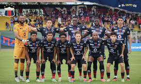
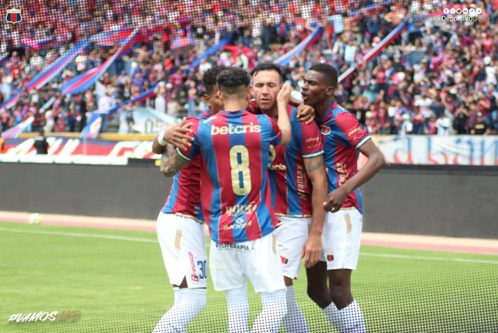
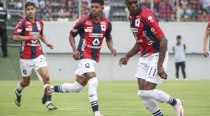

Deportivo Quito es un club con una rica historia en el fútbol ecuatoriano. Fundado en 1940, ha ganado varios campeonatos nacionales y cuenta con una afición fiel en la ciudad de Quito. Aunque ha enfrentado momentos difíciles en lo económico y deportivo, sigue siendo un equipo respetado y querido por su trayectoria. Su estadio es el Olímpico Atahualpa, donde ha vivido grandes jornadas del fútbol nacional.


